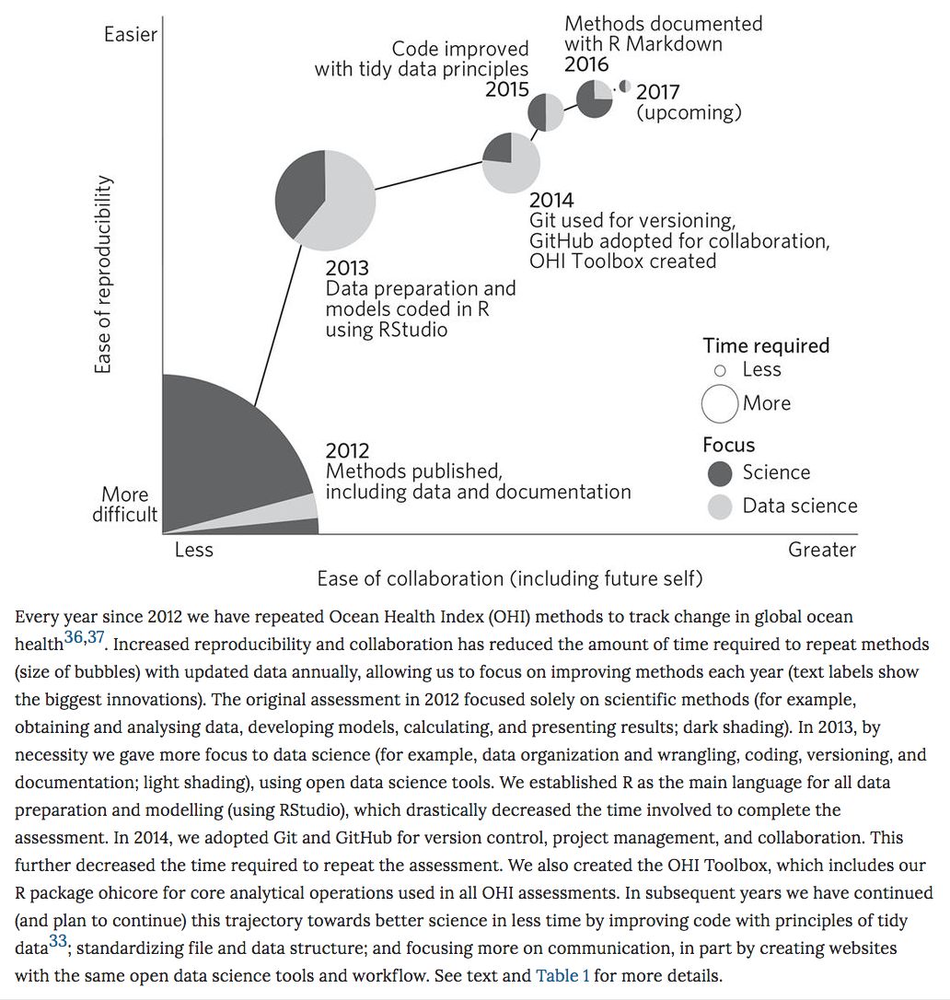

WASdown
Morgan Brand and Robert Schlegel
2017-06-29
Preamble
This book was written using the bookdown R package from Yihui Xie (Xie 2017). It is a combination of work done by Hadley (@hadleywickham), Garrett (@statgarrett) and Chester (@Old_Man_Chester) with some insight from the authors. This a complementory book for a workshop held at the World Aquaculture Conference in Cape Town June 2017. We (the authors) hope to provide exposure to the world of R and some relevant online resources to students which will hopefully put them on track for being self tought coding aqucultureists. An introduction to using R, RStudio, and R Markdown by Chester Ismay is also available in a free book here and more in his DataCamp course at Effective Data Storytelling using the tidyverse. For more insight into the useage we would advice you to look through R for Data Science and ModernDive. For an example of the role within the science workflow read the Nature publication Our path to better science in less time using open data science tools and the extensive testing they have done.
It is possible to adopt new workflows if there is interest from the group. The story of learning in Figure ?? was presented on the Ocean Health Index team website or in their Nature publication (Lowndes et al. (n.d.)).
knitr::include_graphics("images/nature_flow.png")
References
Xie, Yihui. 2017. Bookdown: Authoring Books and Technical Documents with R Markdown. https://github.com/rstudio/bookdown.